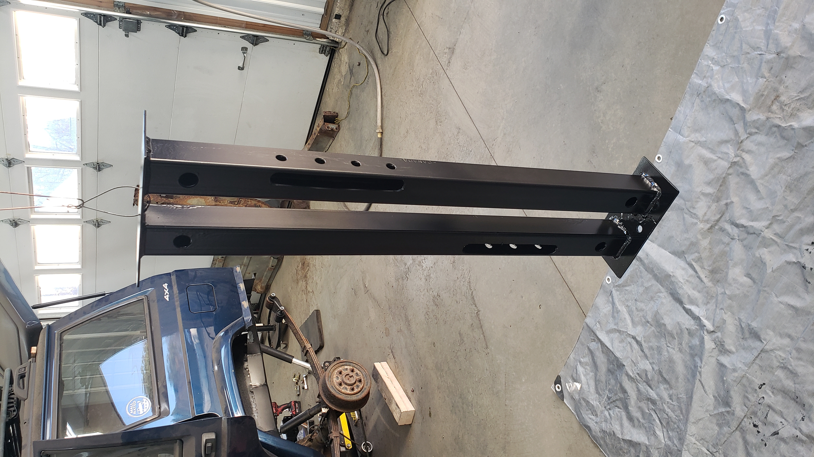
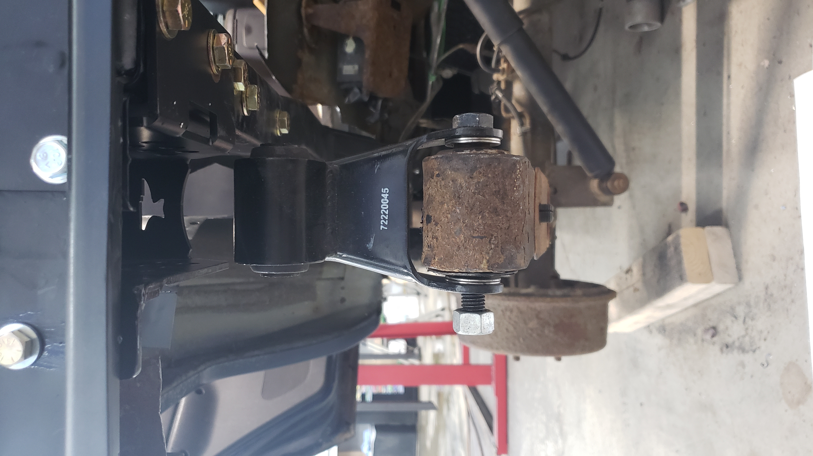
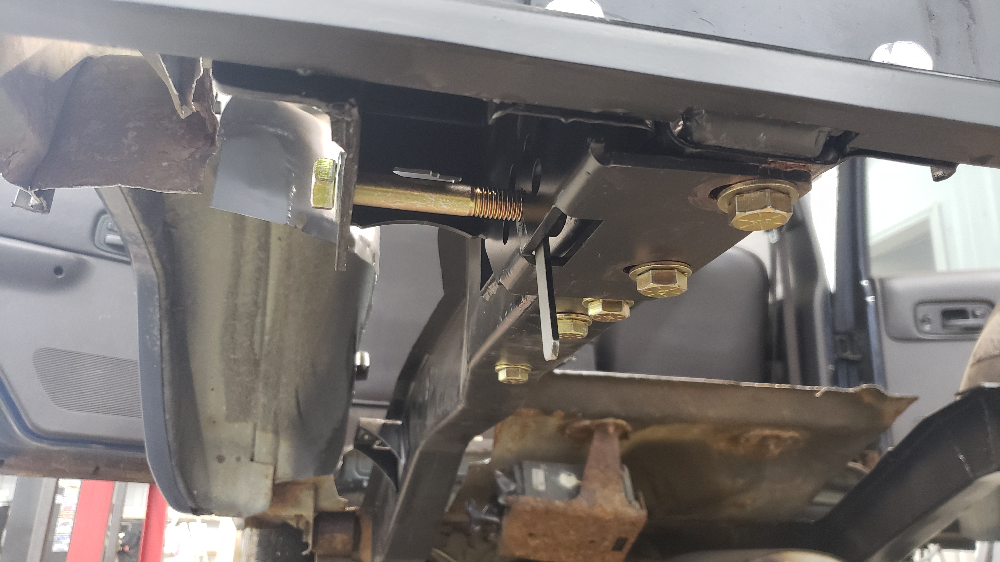
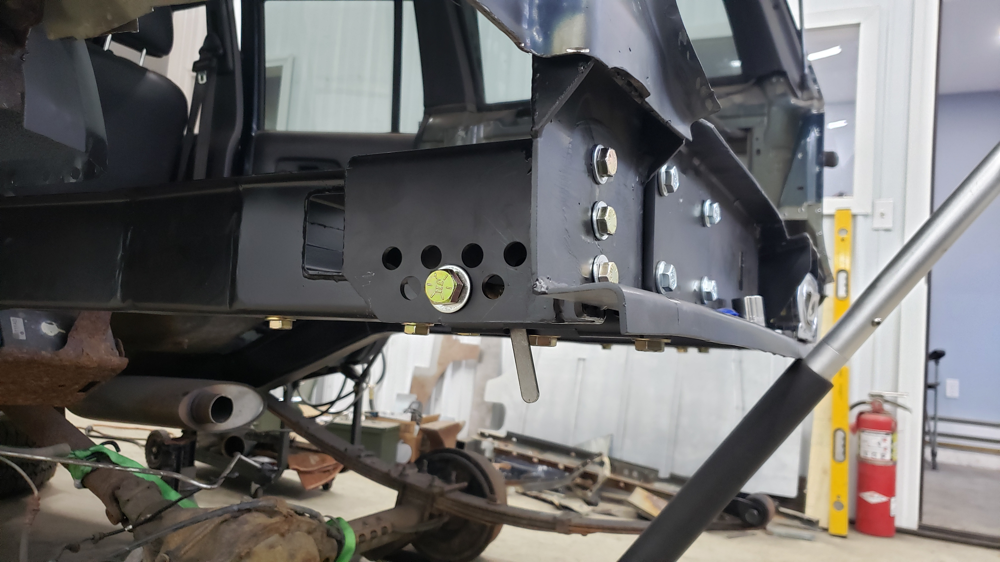
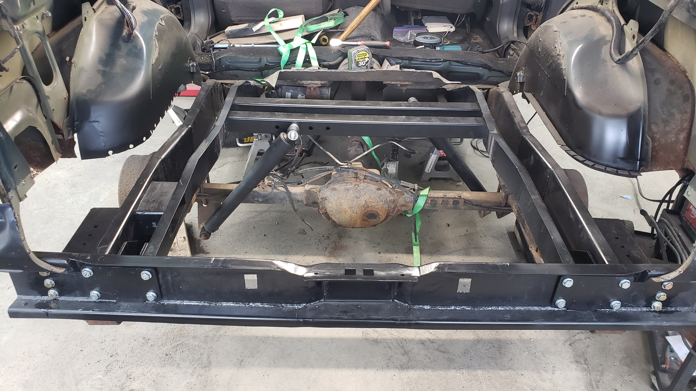
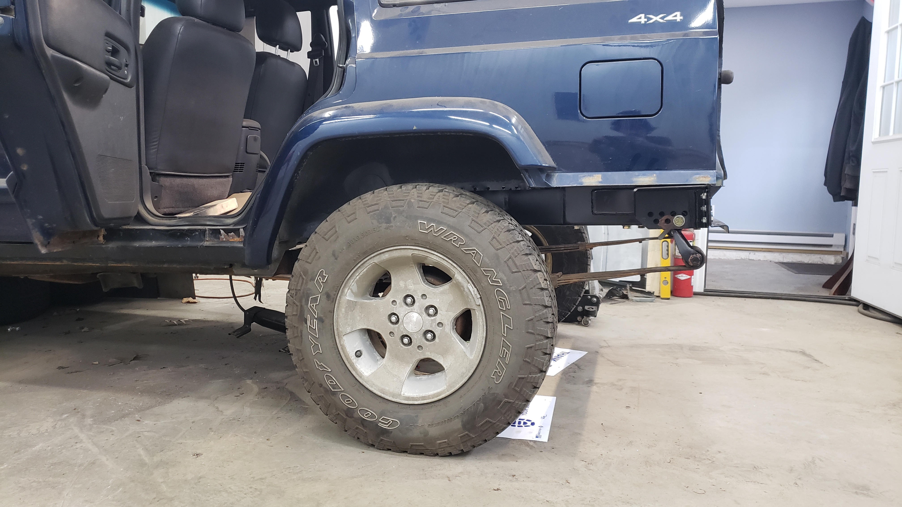

Rust Repair Part 4: Hooking Up The Suspension
With the frame squared away I needed something that I could mount up the suspension to. The only thing holding in the rear axle at this point was the rear driveshaft and the front mounts of the leaf springs.

The OEM shock crossmember is nothing more than 2 pieces of 16ga steel stamped together and mine was far too rusted to save.
I didn’t want to see if I could hunt down an OEM replacement because it seems like just about every part is discontinued nowadays, thanks Mopar. So I decided to whip up a basic replacement.
I found these handy shock mounts.

And with a bit of work I came up with this.


It’s made from 2x2 11ga (1/8") tubing and 1/8" plate. I tell people I made multiple shock points so it’s adjustable, but really I forgot to notch the frame and was worried my shocks might hit the frame.
The large holes in the tubing by the mounting plates are just drain holes.

Some of my best welds yet.
Test fitted the shock crossmember. I had to cut off the bar pins at the top of the shocks.


With the shock crossmember looking promising I sprayed it with some more epoxy primer. 
The next day I poured the leftover paint into the tubing and tilted it all about to try to cover every last inch of bare metal. I don’t want this Jeep to rust out (again) so I’m putting a lot of effort into protecting it.
With the shock crossmember ready to go I started to prepare the mounting brackets for the shackles. I couldn’t figure out why but my rear crossmember was interfering with the shackle brackets causing them to be crooked so I had to modify them.

This is something I should have checked before painting them.

I also had to drill a bunch of holes in my brand new frame for the frame tie ins. Most of these are for bolts that will be used on the gas tank skid plate, but the two closest to the back of the Jeep are for the shackle brackets.


Using a jack to lift up the rear axle I decided to try to see if everything lined up. Driver side was perfect. 
But the passenger side was 1/2" off.

And I basically freaked out. Was my frame that I made incorrectly positioned? Relocating it wasn’t really an option at this point because of how much I welded the frame to the rear crossmember. I had to walk away and do some research before I made any cuts.
I eventually found out that the leaf springs are suppose to be 43 1/2" from center to center of each other. A quick measurement of mine showed them to be 44" apart. Odd. But this was the exact distance my passenger shackle was off by.
I decided not to dig into it any further because I was just relieved to find that my custom fabrication work was still okay. And anyways I plan on lifting the Jeep come spring or so next year. I figured it’d be an issue for future me. My hunch is one of the centering pins of the leafs broke.
And when it comes to mounting up shackle brackets, you should always make sure the nut that fits between the frame and the bracket before going ahead with drilling all the bolt holes. I totally did that. Right.
I didn’t. I didn’t discover the bad news until I was ready to bolt up the shackles so the leafs would be all done only to discover I couldn’t fit the nut on the end of the shackle bolt since the gap between the bracket and the frame was 1/8" too narrow.
I debated grinding down the nut and bolt before admitting to myself that I needed to fix things properly and spent about 4 hours welding up holes, grinding the welds flat, touching up the paint, and drilling new holes.
I feel a lot better now that I took the time to do it right but damn did it suck when I realized how bad I messed up. 
But after that serious detour I was finally making some progress. 
This really excites me. Fresh metal, brand new bolts and no rust to be seen.

With the shackles ready to go I decided to weld in my new shock crossmember. 3 out of 4 of the welds came out amazing (for me). The last one though I boogered up pretty bad. I guess I can live with it.


A day later my new shock bushings arrived. They were the first thing that popped up on Amazon that matched the dimensions I needed.

I regret buying Energy suspension bushings because these are just beater shocks. Buying cheaper bushings would have made it much easier to install them as they ones are crazy stiff and hard to press in.

And with that I was able to hook up the suspension and get her back on all 4 wheels for the first time in over a month. 
Don’t mind the worn out leaf springs that are starting to bend. 
The Jeep actually sits about 1 1/2" higher now. I know the replacement shackles (Moog K150405) are 1" longer so that’s some of it, and I suspect the rest is due to less weight in the rear still.
I had to change the bolt location for the shackles. That was a real PITA. All the copper stuff around bolts is just anti-seize.